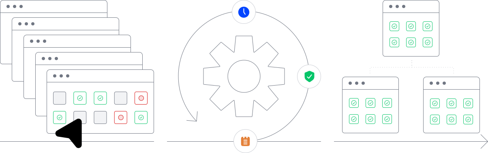

<div class="technology" xmlns="http://www.w3.org/1999/html">
    <div class="technology__wrapper">
        <section class="header-tech"></section>
        <section class="mobile-dev">
            <div class="mobile-dev__heading">
                <h2>Mobile
                    <mark>Development</mark>
                </h2>
                <div class="mobile-dev__text">
                    <p>Choosing whether to develop a native, web-based or hybrid app can be a juggling act between a
                        range
                        of considerations, including budget, development deadline, ease of maintenance, accessibility
                        and
                        simplicity for the end user. With extensive experience</p>
                    <p>of all three app types, we help organizations
                        figure out what they need, and then find the solution that delivers it in the optimal way. (And
                        if
                        they already know what they need, we can do that too.)
                        <a>Learn more</a>
                    </p>
                </div>
            </div>
            <div class="mobile-dev__scroller">
                <div class="scroller-menu">
                    <div class="scroller-menu-text padding-scroll1">
                        <h2>iOS</h2>
                        <p>For apps that are to run on an iPhone, iPad, iPod Touch hardware, we use low-code Swift to achieve high-interaction interfaces, distinctive design and seamless screen flow.</p>
                        <p>iOS apps can be developed faster than Android, reducing development costs. We also offer support through the strict App Store acceptance process.</p>
                    </div>
                    <div class="scroller-menu-text padding-scroll2">
                        <h2>Android</h2>
                        <p>For apps that are to run on an iPhone, iPad, iPod Touch hardware, we use low-code Swift to achieve high-interaction interfaces, distinctive design and seamless screen flow.</p>
                        <p>iOS apps can be developed faster than Android, reducing development costs. We also offer support through the strict App Store acceptance process.</p>
                    </div>
                    <div class="scroller-menu-text padding-scroll3">
                        <h2>React Native</h2>
                        <p>For apps that are to run on an iPhone, iPad, iPod Touch hardware, we use low-code Swift to achieve high-interaction interfaces, distinctive design and seamless screen flow.</p>
                        <p>iOS apps can be developed faster than Android, reducing development costs. We also offer support through the strict App Store acceptance process.</p>
                    </div>
                    <div class="scroller-menu-text__img4">
                        <h2>Flutter</h2>
                        <p>For apps that are to run on an iPhone, iPad, iPod Touch hardware, we use low-code Swift to achieve high-interaction interfaces, distinctive design and seamless screen flow.</p>
                        <p>iOS apps can be developed faster than Android, reducing development costs. We also offer support through the strict App Store acceptance process.</p>
                    </div>
                </div>
                <div class="scroller-track">
                    <div class="mobile-dev__img1"></div>
                    <div class="mobile-dev__img2"></div>
                    <div class="mobile-dev__img3"></div>
                    <div class="mobile-dev__img4"></div>
                </div>
            </div>
        </section>
        <section class="web-dev">
            <div class="web-dev__wrapper">
                <div class="web-dev-heading">
                    <h2>Web Development</h2>
                    <a>Our comprehensive web development service covers front end development & back-end for a stable, secure and scalable server-side setup, as well as web design, programming, content development and more.
                        Learn more
                    </a>
                </div>
                <div class="web-dev-menu">
                    <div class="web-dev-menu__text">
                        <h4>Software architecture</h4>
                        <p>In building the architecture of a system, we take into account the business strategy it is designed to support, quality attributes, user characteristics, design details, and the IT environment in which it is to operate.</p>
                    </div>
                    <div class="web-dev-menu__items">
                        <div class="web-dev-item">
                            
                            <h3>React.js</h3>
                            <p>Best-in-class JavaScript library, used for building user interfaces or interactive UI components and developing new features, without rewriting existing code.</p>
                        </div>
                        <div class="web-dev-item">
                            
                            <h3>dot.net</h3>
                            <p>Characterized by language interoperability, dot.net is a software framework developed by Microsoft used for developing software applications in different languages.</p>
                        </div>
                        <div class="web-dev-item web-dev-padding">
                            
                            <h3>Angular</h3>
                            <p>Angular delivers the speed, productivity and scalability that supports large applications.</p>
                        </div>
                        <div class="web-dev-item web-dev-padding">
                            
                            <h3>Flutter</h3>
                            <p>Ideal for building web applications, Flutter brings a mobile-style experience to browser users.</p>
                        </div>
                        <div class="web-dev-item">
                            
                            <h3>Node.js</h3>
                            <p>For scalable, high-performing apps, developed in JavaScript.</p>
                        </div>
                    </div>
                </div>
            </div>
        </section>
        <section class="support">
            <div class="support__wrapper">
                <div class="support-text">
                    <h2><mark>Support</mark></h2>
                    <p>We support every technological element of a product through a range of services including installation of the new product and product updates, migrations for major software releases, customized applications, and infrastructure software maintenance.</p>
                </div>
                <div class="support-img">
                    
                </div>
            </div>
            <div class="support__agile">
                <div class="support-agile-text">
                    <h2><mark>Agile</mark> Project Management</h2>
                    <p>A flexible, iterative approach to project management characterized by communication and transparency, Agile enables us to break down large projects into manageable tasks. Taking full ownership, we continuously improve processes and methodologies, updating project scope along the way, to get organizations to their product goals sooner.</p>
                </div>
            </div>
            <div class="support__product"></div>
            <div class="support__cloud"></div>
        </section>
    </div>
</div>
